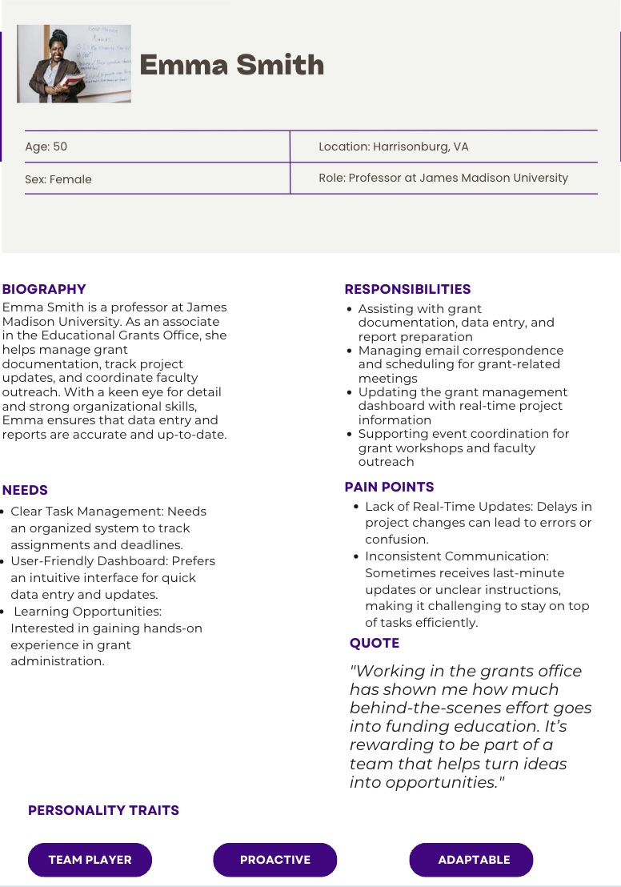
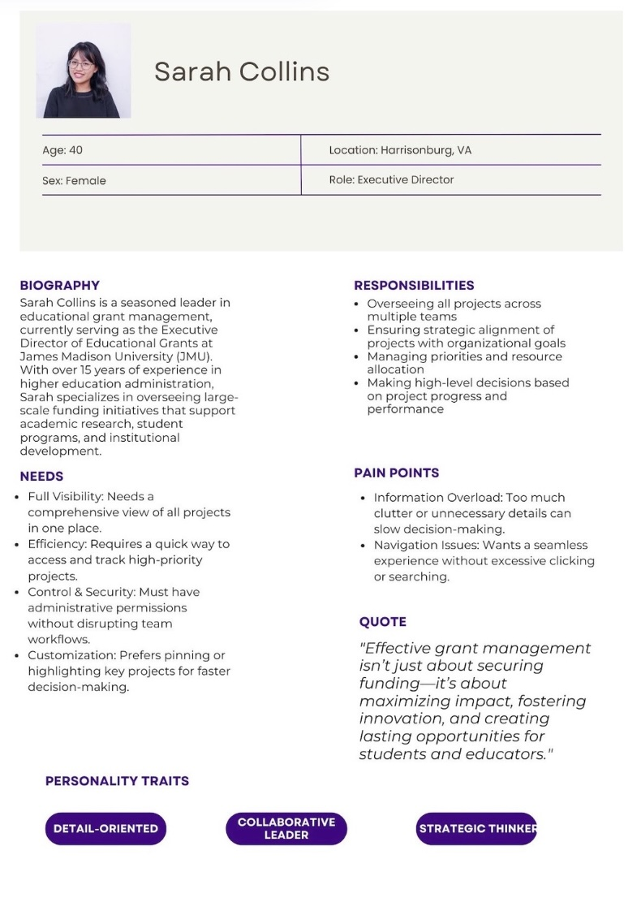
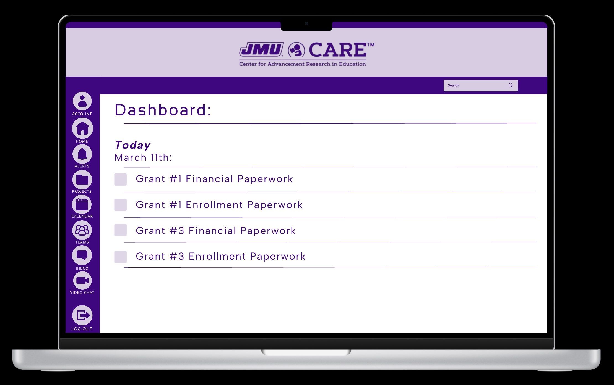
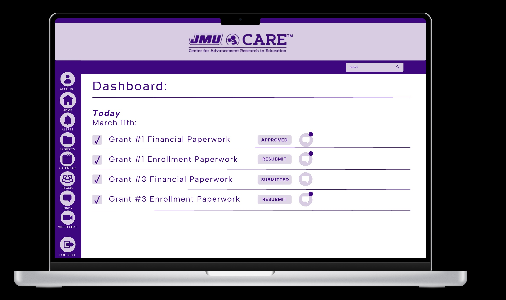
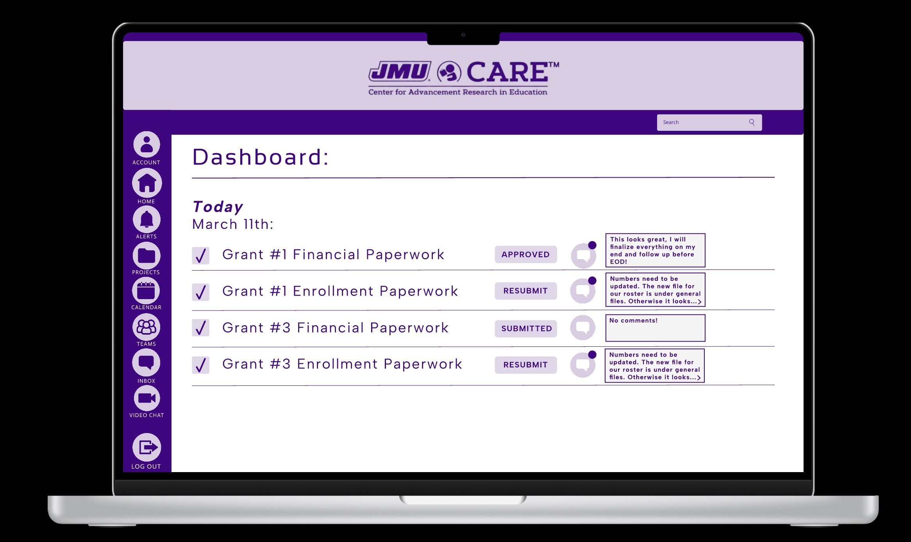
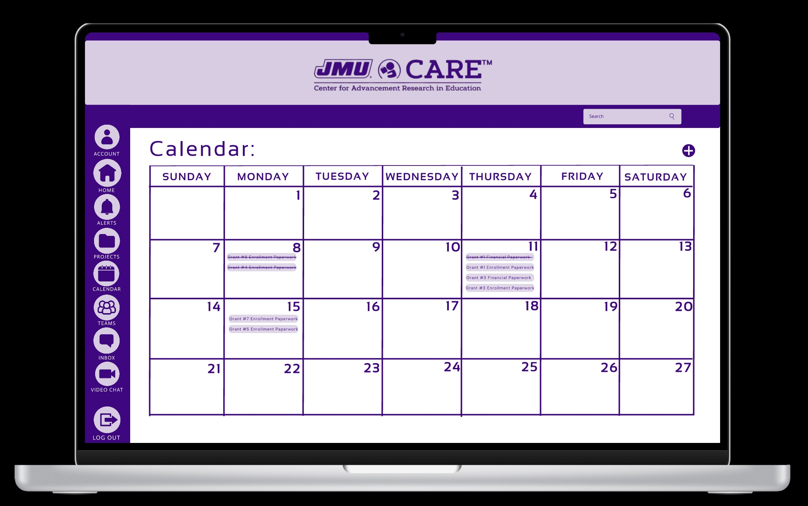
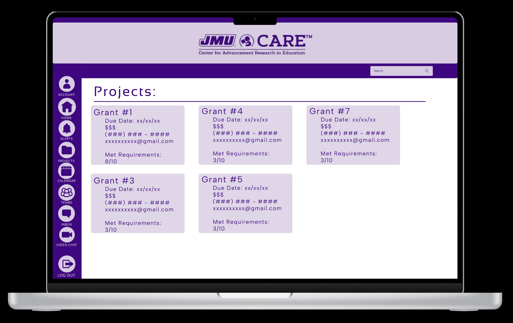
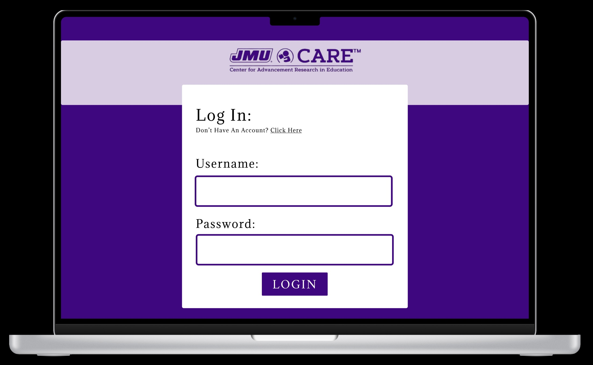

Project Overview
This collaborative capstone project was developed in partnership with the James Madison University CARE program. Our goal was to design a functional database-driven website that streamlined the grant application process for students and faculty seeking CARE funding.
My Role
As the lead UX/UI designer, I worked closely with both design and development teams. I was responsible for user research, wireframing, prototyping in Figma, and ensuring the front-end was intuitive, visually engaging, and met accessibility standards.
User Research
To better understand our users, we developed two detailed personas based on stakeholder interviews and workflow observations. These insights guided design decisions to improve usability, efficiency, and accessibility in our CARE prototype.


Prototype Screens






Key Features
- User-friendly front-end interface
- ADA-compliant and responsive design
- Integrated with backend database (via CIS student collaboration)
- Iterative testing and stakeholder feedback loops
You can view the full capstone project file here: Capstone Project PDF
Impact
The final prototype streamlined communication between students, faculty, and CARE administrators. It also laid a foundation for future technical development and institutional implementation.